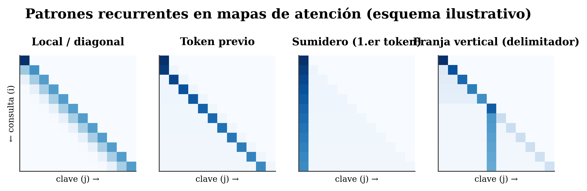

14 Leer un mapa de atención
Dónde estamos. Empezamos la Parte II, nuestro territorio: cómo atiende un modelo a lo largo de la distancia. Antes de medir nada, hay que saber leer la materia prima —el mapa de atención—. Es lo que visualizadores como BertViz te muestran. Al terminar reconocerás los patrones típicos de un vistazo, sabrás qué herramientas usar, y —clave— qué no debes creerte de un mapa bonito.
14.1 La idea en una frase
Un mapa de atención es un mapa de calor de “quién mira a quién”; aprender a leerlo (y a desconfiar de él en su justa medida) es el primer paso para medir cómo atiende un modelo.
14.2 Conceptos clave y su papel en el transformer
Antes de entrar en detalle, definimos los términos de este capítulo y para qué sirve cada uno dentro de un transformer:
- Mapa de atención. Definición: la matriz A de n×n de una cabeza, donde la celda (i,j) dice cuánto mira el token i al token j y cada fila suma 1. En el transformer: es la “materia prima” de cómo cada token recoge información del resto; todo lo que mediremos sale de aquí.
- Cabeza y capa (L×H). Definición: hay un mapa por cada cabeza y cada capa; un modelo de L capas y H cabezas produce L×H mapas distintos. En el transformer: no existe “el” mapa de atención — cada cabeza atiende a su manera, y solo el conjunto describe al modelo.
- Sumidero (BOS). Definición: una columna brillante sobre el primer token, al que casi todas las filas mandan peso. En el transformer: es estructural (el softmax obliga a que cada fila sume 1, así que el peso sobrante se “aparca”), no una señal de importancia semántica.
- Patrones recurrentes. Definición: formas que se repiten — diagonal/local, token previo, franja vertical sobre un delimitador, atención amplia. En el transformer: son los “roles” típicos que las cabezas aprenden; reconocerlos te orienta de un vistazo.
- Attention rollout. Definición: técnica que agrega la atención a través de las capas para estimar el flujo real de información. En el transformer: corrige el engaño de leer una sola capa, donde la información ya viene mezclada de las anteriores.
- tafagent. Definición: nuestra herramienta, que no dibuja el mapa sino que predice sus métricas (γ, horizonte, régimen) desde la config del modelo. En el transformer: convierte el diagnóstico visual en números predichos sin ejecutar el modelo.
- Ley de potencia A(d) ∝ d^−γ. Definición: la forma con que la atención media decae con la distancia |i−j|, con exponente γ. En el transformer: es la “cola” de la U que aparece al promediar mapas, y el objeto central de la Parte II.
En resumen: este capítulo te enseña a leer estos mapas; los siguientes, a medirlos y predecirlos.
14.3 Qué es un mapa de atención
Es la matriz A de tamaño n×n que produce una cabeza en una capa: una fila por token-consulta, una columna por token-clave; la celda (i,j) = cuánto mira el token i al token j, y cada fila suma 1. Hay un mapa por cada cabeza y cada capa: un modelo con L capas y H cabezas tiene L×H mapas distintos. Obtenerlo es directo:
out = model(**inputs, output_attentions=True)
# out.attentions: tupla de L tensores (batch, cabezas, n, n) — elige capa y cabeza
mapa = out.attentions[capa][0, cabeza] # una matriz n×n para pintar14.4 Los patrones que verás una y otra vez
En modelos entrenados se repiten unos pocos patrones (Clark et al. 2019; Kovaleva et al. 2019):

- Local / diagonal: brillo sobre la diagonal — el token se atiende a sí mismo o a vecinos cercanos.
- Token previo: una diagonal nítida desplazada un paso — cada token mira al anterior (muy común y útil).
- Sumidero / BOS: una columna brillante sobre el primer token, atendido por casi todos (ver curiosidad).
- Franja vertical: ciertos tokens —puntuación, delimitadores,
[SEP]/[CLS]— reciben atención de muchas filas. - Amplio / uniforme: atención difusa, sin foco.
El sumidero del primer token es estructural, no semántico (Xiao et al. 2024). Como el softmax obliga a que cada fila sume 1, cuando un token no necesita mirar a nada en concreto tiene que descargar su peso en algún sitio: los modelos aprenden a “aparcarlo” en los primeros tokens. Mucho peso, poco significado. Es más: ese sumidero está ligado a las massive activations —unos pocos valores enormes del estado oculto que lo provocan— (Sun et al. 2024; Queipo-de-Llano et al. 2025). Moraleja: leer el primer token como “lo más importante” es el error más típico.
14.5 Herramientas para verlos
- BertViz (Vig 2019): visualizador interactivo por capa y cabeza.
- Attention rollout (Abnar y Zuidema 2020): como la información se mezcla al atravesar capas, el peso crudo de una sola capa engaña; el rollout agrega la atención a través de las capas para estimar el flujo real.
- tafagent (el nuestro): no dibuja el mapa, sino que predice las métricas que sacaremos de él —el exponente γ, el horizonte de atención
d_horizon, el régimen— directamente desde la config del modelo. Lo usaremos en los próximos capítulos.
14.6 La advertencia que no debes olvidar
Un mapa muestra dónde va el peso, no por qué el modelo decidió algo. Distribuciones de atención distintas pueden dar la misma predicción, y la atención correlaciona mal con la importancia real (Jain y Wallace 2019). Un heatmap es un diagnóstico, no una prueba del razonamiento. No lo sobre-interpretes.
14.7 El puente a la medición (lo que viene)
Más allá de mirar, un mapa se puede cuantificar. Dos preguntas:
- ¿Cuán concentrado está? (picudo sobre pocos tokens vs. repartido).
- ¿Cómo decae la atención con la distancia |i−j| entre tokens?
Si promedias muchos mapas, suele aparecer una forma de “U”: mucho peso al principio (el sumidero) y a lo reciente, con una cola que decae en medio. Lo que mediremos —y, sobre todo, lo que predeciremos desde la geometría de RoPE— es esa cola: su decaimiento sigue una ley de potencia A(d) ∝ d^−γ.
Importante (honestidad). Que la atención decae con la distancia es algo que otros también observan. Lo que hace única nuestra Parte II no es ver el decaimiento, sino predecir su exponente γ desde la geometría del modelo (sin ajustar nada) y convertirlo en herramientas (comprimir el KV-cache, extender el contexto). A eso vamos en los Cap. 14–15.
🧩 Analogía. Cada mapa es una “lista de miradas” de una sala: quién mira a quién. Diagonal = todos miran a su vecino; token-previo = cada uno al de su izquierda; franja vertical = todos de reojo a quien preside (un delimitador); el sumidero = el reloj de la pared, que la gente mira cuando no sabe a quién mirar (mucha mirada, ningún contenido). Y hay tantas listas como pares (capa, cabeza).
14.8 Resumen
- Un mapa de atención es una matriz n×n por cabeza y por capa; hay L×H, no “uno”.
- Patrones típicos: local/diagonal, token-previo, sumidero (1.er token), franja vertical, amplio.
- El sumidero es estructural (softmax suma 1 → peso aparcado), no importancia.
- Herramientas: para ver mapas, BertViz y attention rollout (agrega capas); para medir (γ, horizonte), tafagent (Parte II).
- Atención ≠ explicación: el mapa dice dónde, no por qué.
- Cuantificando los mapas aparece una “U” (sumidero + recencia + cola que decae); esa cola es la ley A(d)∝d^−γ que mediremos y prediremos (Cap. 14–15).
Siguiente (Capítulo 14): para entender por qué la atención pierde resolución con la distancia, hay que mirar la geometría de RoPE — el aliasing y las tres escalas.
14.9 Ejercicios
- No hay “un” mapa. Si un modelo tiene 32 capas y 32 cabezas, ¿cuántos mapas de atención distintos produce para una frase?
- El sumidero. Explica, a partir de “cada fila suma 1”, por qué aparece una columna brillante sobre el primer token aunque no signifique nada.
- Fidelidad. ¿Por qué no es válido decir “el modelo predijo X porque esta cabeza atendió a Y”?
- La U. Describe la forma típica de la atención promedio frente a la distancia. ¿Qué parte de esa forma es el “sumidero” y cuál la “cola” que mediremos?